Cabai (Capsicum) merupakan tanaman hortikultura yang memiliki
berbagai spesies dengan karakteristik berbeda, mulai dari bentuk buah,
ukuran, warna, hingga tingkat kepedasan. Perbedaan tersebut menjadikan
setiap jenis cabai memiliki keunggulan dan potensi budidaya yang
berbeda-beda.
ChiliCare mengorganisasi informasi cabai berdasarkan lima spesies budidaya utama, sehingga setiap varietas lokal dapat dikenali dengan lebih terstruktur dan praktis.
5
Spesies Utama
20+
Varietas Lokal
Lima Spesies Utama
Cabai budidaya dikelompokkan menjadi lima spesies utama berdasarkan
karakteristik morfologi, tingkat kepedasan, serta potensi budidayanya.
Pilih salah satu untuk mempelajari lebih lanjut.
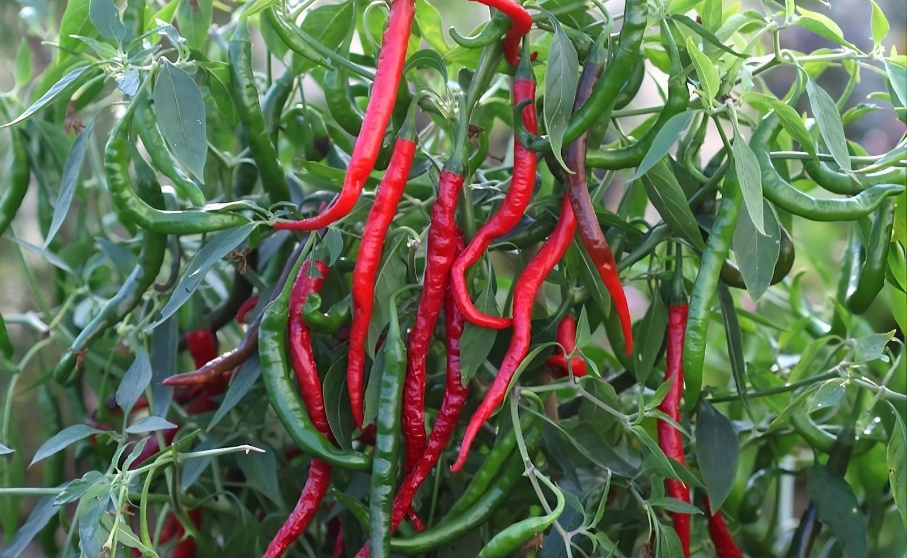
Cabai Merah & Keriting
Capsicum annuum
Spesies cabai yang paling banyak dibudidayakan di Indonesia,
meliputi cabai merah besar, cabai keriting, dan paprika.
Capsicum annuum adalah spesies cabai paling luas dibudidayakan di Indonesia dan dunia. Termasuk cabai merah besar, cabai keriting, paprika, serta banyak varietas lokal. Spesies ini dikenal dengan produktivitas tinggi dan variasi bentuk buah yang beragam.
Karakteristik
Buah panjang hingga besar, bentuk keriting atau blocky (paprika).
Warna buah hijau → merah saat matang.
Tingkat kepedasan sedang, lebih rendah dibanding C. frutescens atau C. chinense.
Adaptif di dataran rendah maupun menengah.
Produktivitas tinggi, banyak varietas unggul lokal.
Varietas
Indonesia Tanjung-2LinggaKencanaAndalasKeriting BukittinggiKopayInternasional Huacle (Meksiko)Mirasol (Amerika Latin)Paprika (global)
Nugroho et al., 2019 – Analisis keragaman genetik cabai Indonesia. | Terryana et al., 2020 – DNA fingerprint varietas lokal. | Ediwirman et al., 2023 – Uji penampilan genotipe cabai Sumatra Barat. | Budiyanti et al., 2024 – Keragaman genetik cabai lokal Sumatra.
Cabai Rawit
Tabasco
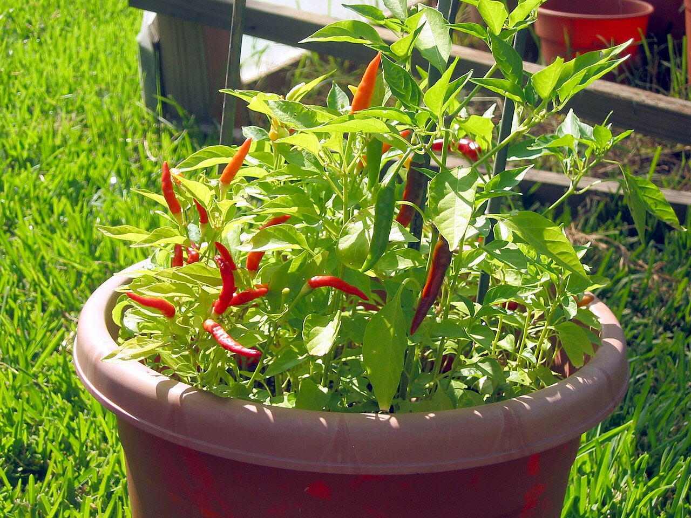
Peri-peri(African Birdseye)
Capsicum frutescens
Capsicum frutescens adalah cabai liar yang memiliki kedekatan genetik dengan cabai budidaya Capsicum chinense .Cabai ini berasal dari Amerika Tengah dan Selatan serta Meksiko. Kultivar cabai C. frutescens dapat berupa tanaman tahunan atau tanaman tahunan berumur pendek. Buahnya kecil, ramping, dengan tingkat kepedasan tinggi. Spesies ini banyak dipakai dalam sambal dan masakan Nusantara, serta memiliki varietas lokal khas di berbagai daerah.
Karakteristik
Buah kecil, ramping, panjang ±2–5 cm.
Warna buah hijau → merah saat matang.
Tingkat kepedasan tinggi (lebih pedas dari C. annuum).
Cocok dibudidayakan di dataran rendah hingga menengah.
Produktivitas sedang, tapi nilai ekonomis tinggi karena permintaan pasar stabil.
Varietas
Indonesia Prima AgrihortiTripangMadunMidunTundukRamaHiyung (varietas khas Kalimantan Selatan).Internasional Bird’s eye chilli (Asia Tenggara)Donne’ (Guam)tabasco(Portuguese)
Nugroho et al., 2019 – Analisis keragaman genetik cabai rawit Indonesia. | Mahmudah & Badruzsaufari, 2020 – Studi fenetik cabai Hiyung. | Jaiswal et al., 2021 – Genetika dan pemuliaan cabai Capsicum frutescens. | Carvalho et al., 2014 – Hubungan morfologi dan genetik antara bentuk liar dan domestikasi C. frutescens dan C. chinense. | wikipedia.org
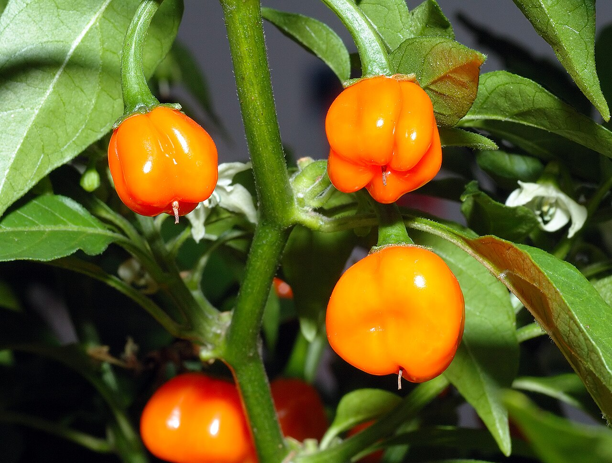
Habanero
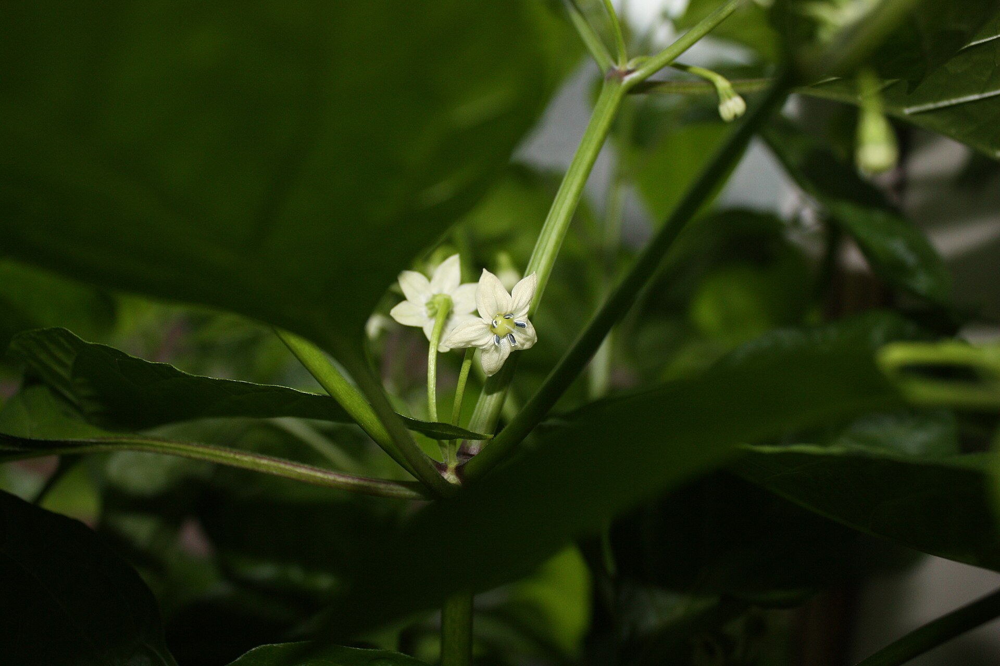
Bunga C. Chinense (Madame Jeanette)
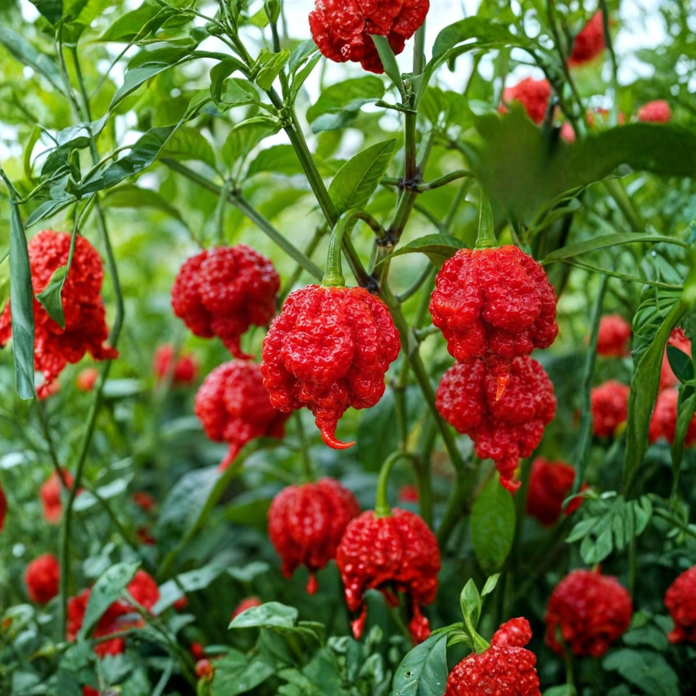
Carolina Reaper
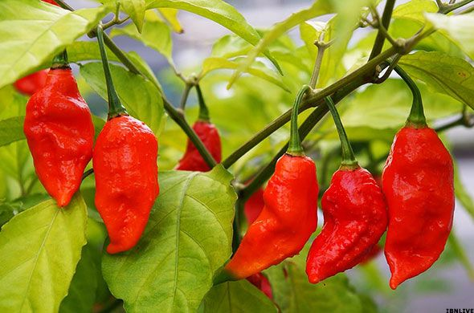
Ghost Pepper (Bhut Jolokia)
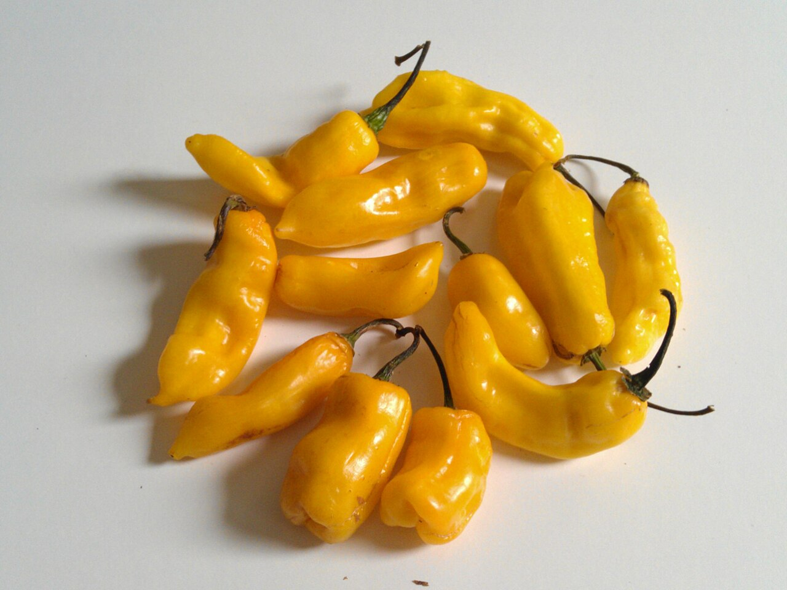
Madame Jeanette
Scotch Bonnet (Karibia)
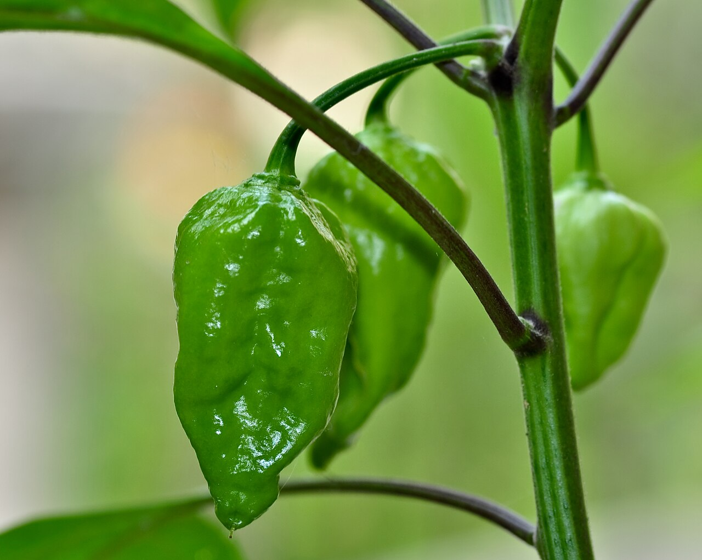
Naga Morich
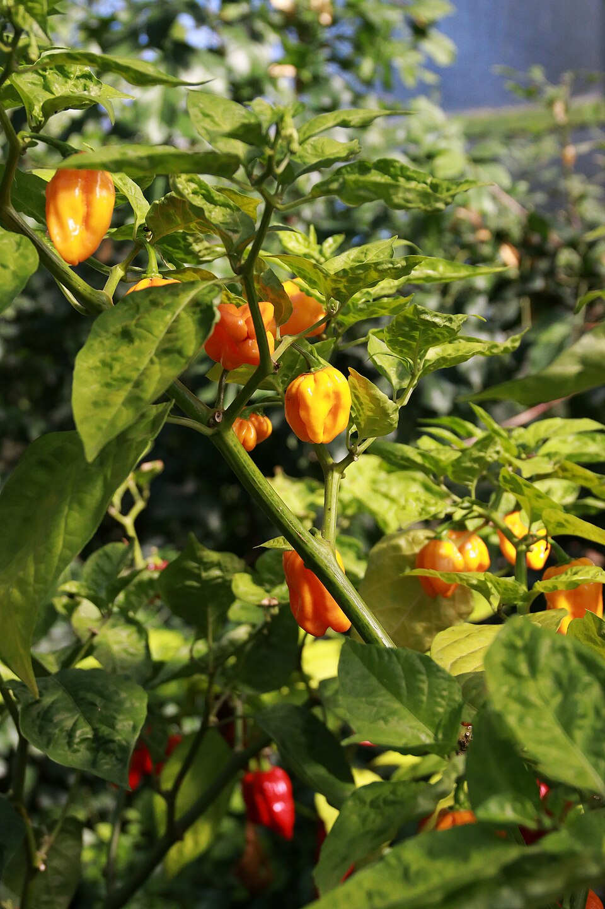
NuMex peppers
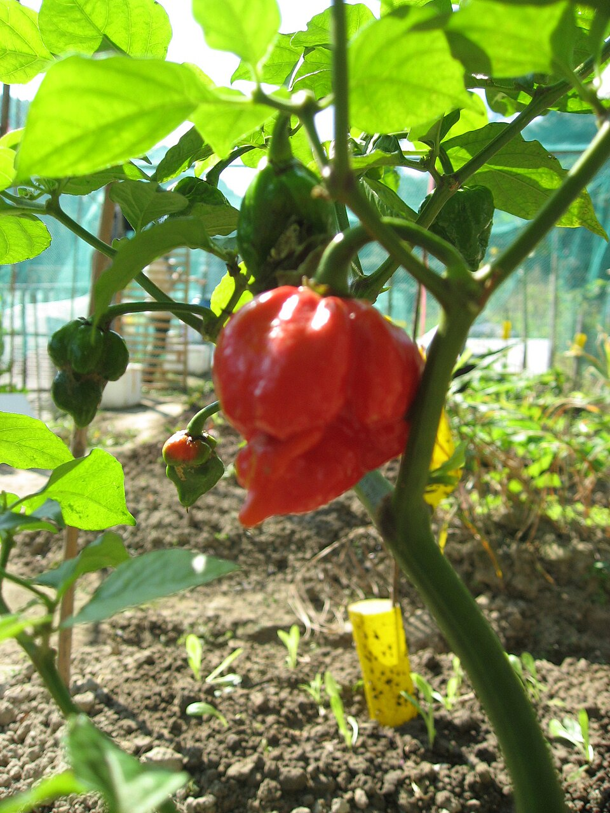
Trinidad Scorpion 'Butch T'
Capsium Chinense
Capsicum chinense, umumnya dikenal sebagai "cabai jenis habanero", adalah spesies cabai asli Amerika. Varietas C. chinense terkenal karena rasa uniknya dan dalam banyak kasus, tingkat kepedasannya yang luar biasa. Cabai terpedas di dunia adalah anggota spesies ini, dengan skor unit panas Scoville sebesar 2,69 juta yang diukur padakultivar C. chinense Pepper X pada tahun 2023.
Spesies ini mencakup cabai Katokkon (Toraja), Cotoh (Batu), serta varietas internasional seperti Habanero dan Bhut Jolokia. Buahnya sering beraroma khas dan bentuk blocky/berlekuk.
Karakteristik
Buah blocky atau berlekuk, ukuran sedang.
Warna buah hijau → oranye/merah saat matang.
Tingkat kepedasan sangat tinggi (lebih tinggi dari C. annuum dan C. frutescens).
Aroma khas fruity atau smoky.
Adaptasi kuat di daerah tropis, terutama kantong keragaman lokal di Toraja.
Amanah et al., 2024 – Analisis molekuler Katokkon dengan ISSR markers. | Prayuda et al., 2024 – Karakterisasi kuantitatif varietas Katokkon Toraja. | Yamamoto et al., 2014 – Sejarah dan distribusi C. chinense di Indonesia. | Carvalho et al., 2014 – Hubungan morfologi dan genetik C. frutescens dan C. chinense. | wikipedia.org
Aji Amarillo
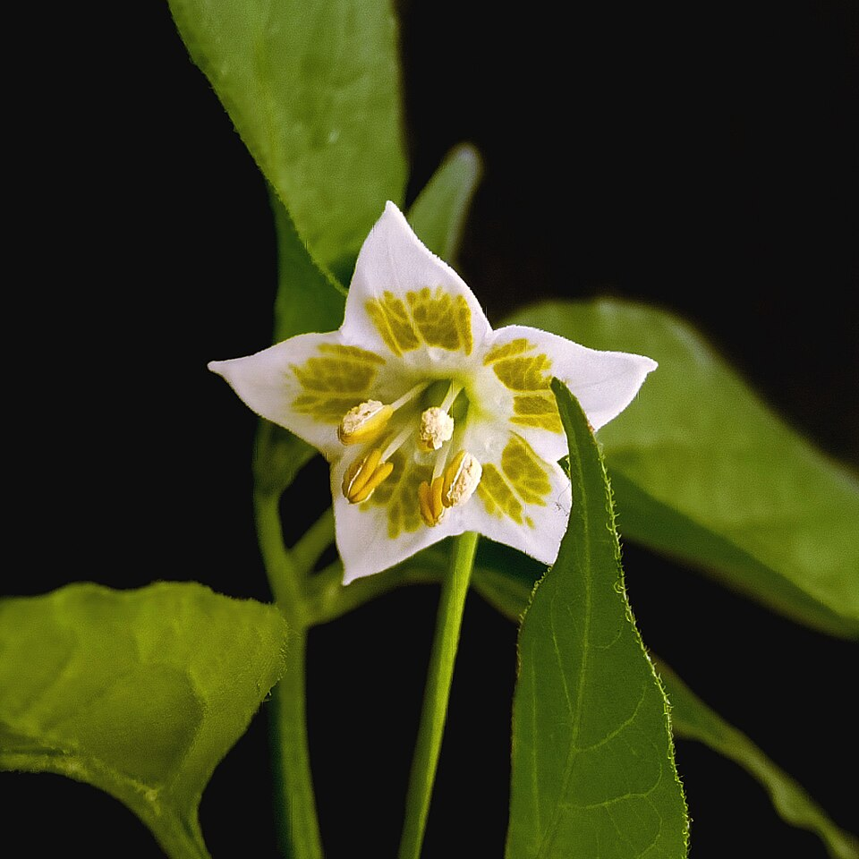
Capsicum Baccatum Flower
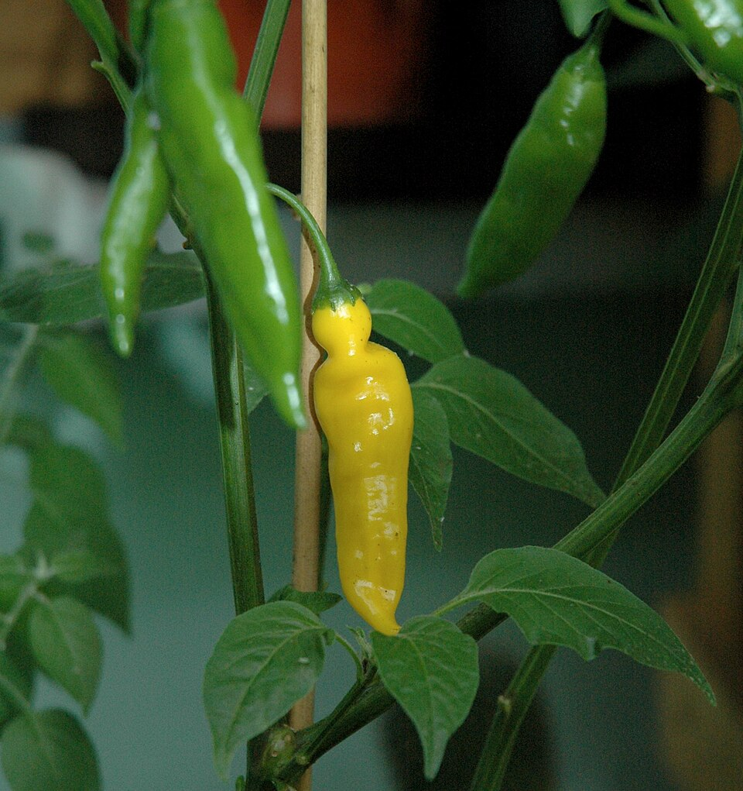
Aji Lemon Drop (Bolivia)
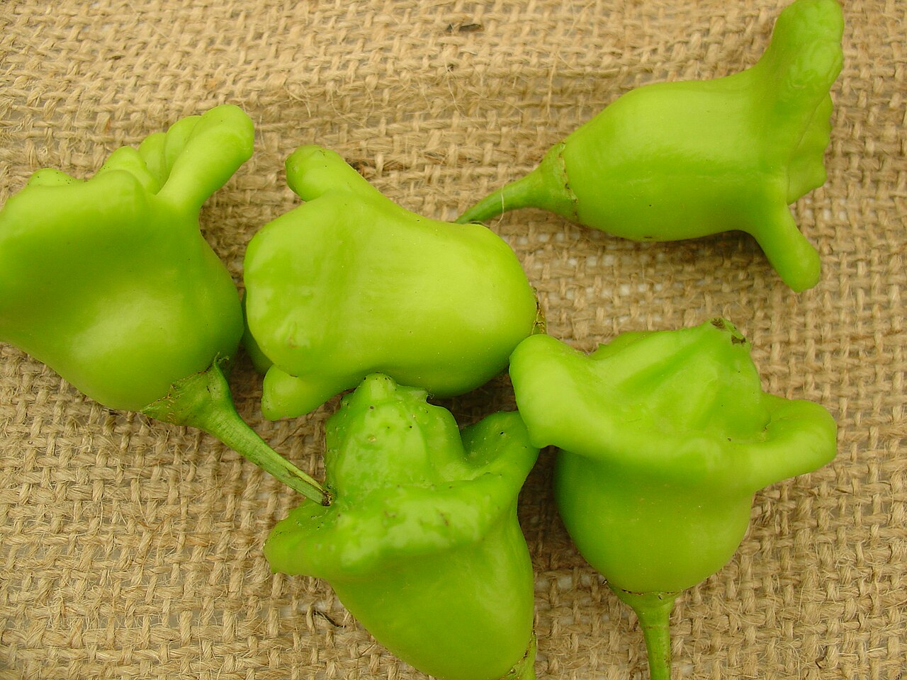
Bishop's Crown
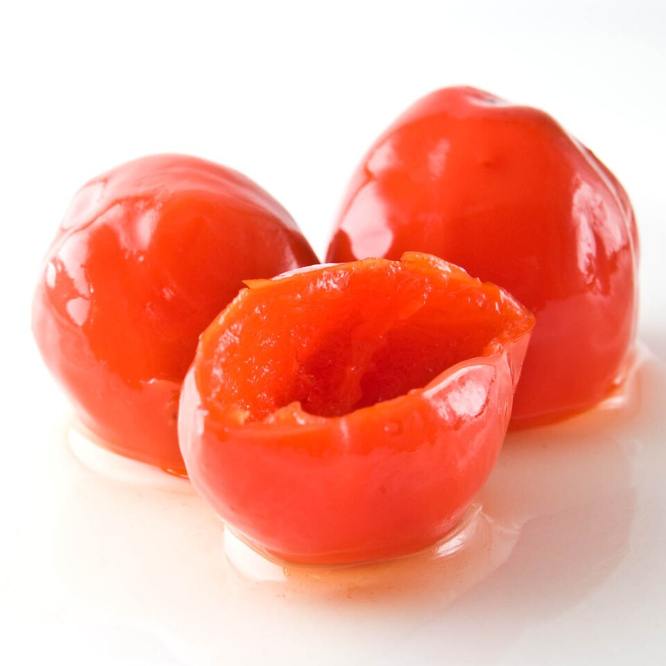
Piquante pepper
Capsium Baccatum
Capsicum baccatum , juga disebut sebagai ají (bahasa Spanyol:[aˈxi]), adalah anggota genus Capsicum , dan merupakan salah satu dari lima spesies cabai yang dibudidayakan. Buahnya cenderung sangat pedas dan memiliki tingkat kepedasan 30.000 hingga 50.000 pada skala satuan panas Scoville.
Varietas cabai dalam spesies C. baccatum memiliki bunga berwarna putih atau krem dan biasanya memiliki mahkota bunga berwarna hijau atau emas. Bunga-bunga tersebut diserbuki oleh serangga atau penyerbukan sendiri. Buah cabai dari spesies baccatum telah dibudidayakan menjadi berbagai bentuk dan ukuran, tidak seperti spesies capsicum lainnya yang cenderung memiliki bentuk yang khas. Tidak seperti tanaman Capsicum frutescens , buah cabai biasanya menggantung ke bawah dan dapat memiliki rasa jeruk atau buah-buahan.
Karakteristik
Buah berukuran sedang, sering berbentuk lonceng atau melengkung.
Warna buah bervariasi: hijau → merah, oranye, atau kuning.
Tingkat kepedasan sedang hingga tinggi, dengan rasa fruity.
Bunga biasanya memiliki bercak kuning khas pada mahkota.
Lebih banyak ditemukan di dataran menengah hingga tinggi.
Varietas
Internasional Aji Amarillo (Peru)Aji Cristal (Chile)Aji Lemon Drop (Bolivia)Aji Panca (Peru)
Liu et al., 2023 – Genom Capsicum budidaya dan liar, termasuk C. baccatum. | Ibiza et al., 2012 – Taksonomi dan keragaman genetik cabai di Andes. | wikipedia.org
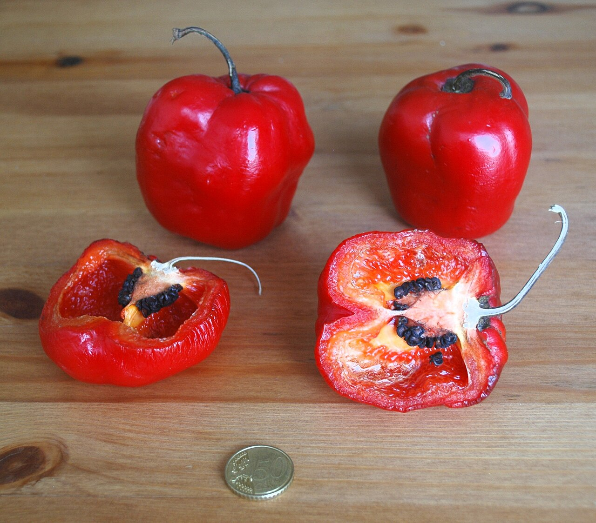
Rocoto
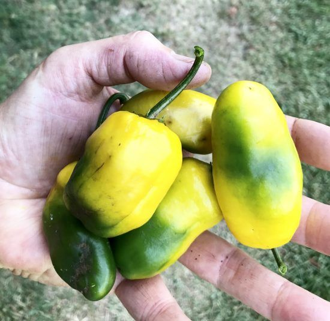
Canário
Capsium Pubescens
Capsicum pubescens adalah tanaman dari genus Capsicum (cabai). Nama spesiesnya, pubescens , merujuk pada daun cabai ini yang berbulu. Keberbuluan daun, bersama dengan bijinya yang berwarna hitam, membuat Capsicum pubescens dapat dibedakan darispesies Capsicum lainnya. Capsicum pubescens memiliki buah berwarna kuning, oranye, merah, hijau, atau cokelat yang pedas.
Seperti semua spesies lain dari genus Capsicum , tanaman dari spesies Capsicum pubescens tumbuh sebagai semak, tetapi kadang-kadang sebagai tanaman merambat. Mereka tumbuh menjadi tanaman berkayu setinggi empat meter dengan relatif cepat, dan hidup hingga 15 tahun, yang memberi mereka, terutama seiring bertambahnya usia, penampilan yang hampir seperti pohon.
Karakteristik
Daun berbulu halus (pubescent).
Biji berwarna hitam (unik dibanding spesies lain).
Buah bulat atau lonjong, ukuran sedang–besar.
Adaptasi kuat di dataran tinggi (≥1.000 mdpl).
Tingkat kepedasan sedang–tinggi dengan rasa agak “smoky”.
Varietas
Indonesia BodongWudel (Jawa Timur, lereng Semeru)Internasional Rocoto (Peru)Manzano (Meksiko)Locoto (Bolivia)
Yamamoto et al., 2013 – Sejarah, taksonomi, dan distribusi C. pubescens di Indonesia. | Liu et al., 2023 – Genom cabai budidaya dan liar, termasuk C. pubescens. | wikipedia.org